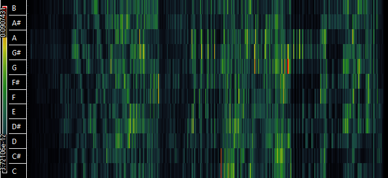

Week 9: Extraction and Analyses of Audio
For this weeks task I decided to use Paul Dukas piece 'The Sorcerer's Apprentice'. First, I used Audacity to break the piece into three distinct sectiona and then followed the lab activities instructions on how to extract the different features. The following spectograms, mfccs and chromagrams are shown below.
| Introduction - Sorcerers Apprentice | Middle - Sorcerers Apprentice | End - Sorcerers Apprentice< | |
| Spectogram |  |
||
| MFCC | |||
| Chromagram |  |
We then used Python to compute and visualise the corresponding histograms: Histograms from MFCC:
| Introduction | End | |
 |
Histograms from Chromagrams:

Analysis of histograms
comparing either mfcc/chroma, say why there is a difference